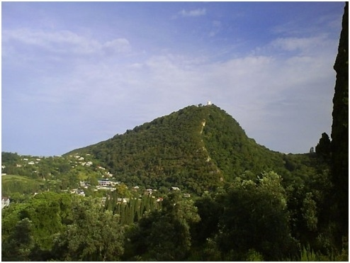
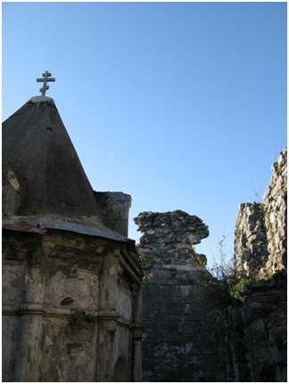
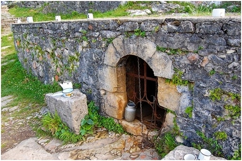
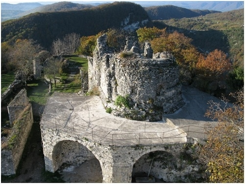

|

(Апсарская, Иверская гора) - гора в Новом Афоне. Высота - высоту 344 м. На вершине горы находятся развалины города Анакопия, в недрах горы Новоафонская пещера.
Анакопия - древняя столица княжества Абазгия и (до 806) Абхазского царства. Развалины города находятся на Анакопийской горе в Новом Афоне в Абхазии. В византийских источниках известна также как Трахея.
Дорога к крепости серпантином от входа в пещеру ведет среди домов по нагретому солнцем асфальту. С поворота дороги открывается вид на Новый Афон - кипарисовые аллеи, монастырские корпуса и собор, увенчанные голубыми куполами, красное и серебристое железо крыш среди зелени парков и садов, естественные ступени Афонской горы, бескрайнее море... Дорога уводит в дубовый лес, покрывающий круто наклонные известняковые плиты, подрубленные дорогой. Неожиданно вверху сквозь заросли показываются участки высоких светло-серых стен и башен, покрытых вьющимися растениями и кустарником. Еще один изгиб серпантина - и дорога приводит к широкому пролому разрушенной стены.
Древнейшая постройка Анакопии - это небольшое кольцо нагорной крепости, стены которой, возведены из крупных, хорошо обработанных блоков известняка, сложенных в духе лучших римских строительных традиций. Крепостные ворота образованы тремя известняковыми монолитами и приподняты высоко над землей; в крепость можно было попасть только по приставной деревянной лестнице. В восточной части ограды изнутри видны каменные ступени, по которым в древности воины поднимались на стену. Именно это укрепление было известно византийским авторам под названием Трахеи.
В конце VII века при непосредственном участии византийцев, встревоженных вторжениями арабов, была возведена основная линия стен средневековой Анакопии, охвативших территорию размером 450х150 метров. С юга, где склон горы был пологим и доступным, стена была укреплена семью башнями - квадратными в менее доступных местах, круглыми же там, где легко могли быть подведены стенобитные машины. Наиболее примечательна западная круглая башня, расположение и форма которой позволяли вести из нее обстрел противника под углом почти в 290°. Во втором этаже древнейшей части этой башни сохранились пять бойниц, устроенных в специальных нишах, и вход, перекрытый аркой. Боевая мощь этой башни была обусловлена еще и тем, что она защищала подступы к главным крепостным воротам.
Древняя дорога огибала башню слева, подходила к скрытому за нею входу в соответствии с заповедью еще античных зодчих, требовавших размещать ворота так, чтобы при подходе к ним противник оказывался повернутым к осажденным своей незащищенной щитом правой стороной.
Проникновение в Анакопийскую крепость было затруднено и тем, что за главными воротами непосредственно следовал небольшой внутренний двор, окруженный дополнительными стенами и соединенный с основной территорией крепости еще одними воротами. Между второй и третьей башнями в наружной стене видны следы вылазной калитки, позднее заложенной. Отсюда выводились отряды защитников во фланг штурмовавших главные ворота.

С сооружениями основной оборонительной линии Анакопии связана яркая страница истории Абхазии. В 736 - 737 годах у этих стен было остановлено 60-тысячное войско арабов, руководимых известным полководцем Мурваном-ибн-Мухаммедом, прозванным за свою жестокость Глухим, т. е. глухим к мольбам и жалобам. Грузинский летописец сообщает, что с укрывшимся в крепости грузинским царем Арчилом и братом его Миром было "до одной тысячи человек да из абхазского войска две тысячи бойцов", которые должны были противостоять арабам, "по численности равным темной туче саранчи и комаров". Судьба, однако, оказалась милостивой к защитникам Анакопии. Летописец дальше сообщает, что среди арабского войска началась эпидемическая болезнь желудка, унесшая за несколько дней 35 тысяч человек. Три тысячи арабов погибли во время штурма крепостных стен, Мурвану пришлось уйти - задуманный им поход через Абхазию в обход Черного моря в тыл Византии провалился. Не пропустила, по-видимому, Анакопия на запад и арабского полководца Сулеймана-ибн-Исама в 788 году - он ограничился жестоким опустошением расположенных восточное Апсилии и Мисиминии. В течение почти целого столетия после этого Анакопия была столицей сначала Абазгского княжества, а затем Абхазского царства. Позже, когда столица была перенесена в Кутаиси, значение крепости несколько упало.

По склонам горы, от подошвы до вершины, была выложена камнем дорога, нагорная крепость окружена каменными террасами, построены здания часовен, гостиницы, станции канатной дороги. Одна из часовен, раскрытая на три стороны, до сих пор сохранилась внутри древнего храма. На стене ее помещена копия иконы Иверской божьей матери, перед ней горит маленькая лампадка и лежат скромные дары: несколько медных монеток, ломоть хлеба.
Одно из чудес нагорной крепости - неиссякаемый колодец, уже восемьдесят лет привлекающий внимание прежде паломников и теперь туристов.
На этот счет существуют две гипотезы. Первая сводится к тому, что водовод к колодцу был сооружен в древности строителями Анакопии и действовал он по тому же принципу сообщающихся сосудов. Как полагают, такой водовод могли провести в канаве, прорытой на склонах обеих гор (Иверской и Афонской) и через долину между ними под речкой, а затем замаскированной землей. Вторая гипотеза сводится к мысли, что под постройками на вершине была сооружена когда-то в древности воронка из плотного материала, которая собирала дождевую воду. Правда, как отмечают сторонники этой точки зрения, таким способом можно объяснить поступление в колодец лишь небольшого количества воды, в то время как в действительности колодец практически неиссякаем.
Анакопийская крепость - наиболее полно сохранившееся древнее укрепление на территории Абхазии.

|